The vendor meeting is at 4, so I need the commission numbers on this sheet finished and a PDF of it beside the workbook: commission is each sale price times the rate the office policy note in the same folder gives for that band, and the sheet has to end sorted by commission, biggest first.
{
"config": [
{
"type": "execute",
"parameters": {
"command": "mkdir -p '/home/user/realestate' && printf %s 'T2ZmaWNlIGNvbW1pc3Npb24gcG9saWN5CgpTYWxlIHByaWNlIHVuZGVyIDMwMDAwMDogcmF0ZSAwLjAxNQpTYWxlIHByaWNlIDMwMDAwMCB0byA1OTk5OTk6IHJhdGUgMC4wMgpTYWxlIHByaWNlIDYwMDAwMCBhbmQgYWJvdmU6IHJhdGUgMC4wMjUK' | base64 -d > '/home/user/realestate/commission_policy.txt' && printf %s 'UEsDBBQACAgIABG1Cl0AAAAAAAAAAAAAAAALAAAAX3JlbHMvLnJlbHOtks9qwzAMh+99CqN747SFMUacXsqgtzK6B9BsJTGJ/2BrW/b2M2OwdZSwwY6Wf/r0IdTsZzeJF0rZBq9gU9UgyOtgrO8VPJ7v17ewb1fNA03IJZIHG7MoPT4rGJjjnZRZD+QwVyGSLz9dSA65PFMvI+oRe5Lbur6R6TsD2gumOBoF6Wg2IM5vkX7DDl1nNR2Cfnbk+cqIH4lCxtQTK5gn+RrS+BTCWBUoyOsu27+6mAUXR4wGGaUOidYxFUhiS/nLqnSfSjl/JJa8dv+5I5qZvCGzrIQxfhqtGnlxC+07UEsHCGu/dgTfAAAAQgIAAFBLAwQUAAgICAARtQpdAAAAAAAAAAAAAAAADwAAAHhsL3dvcmtib29rLnhtbI1T227bMAx931cYek98SeulQZwic2q0wC5F07XPsk3HWmTJkJhbh/17aTnuOmwPe7AlktLhIXk0vz420tuDsUKrhIXjgHmgCl0KtUnY98dsNGWeRa5KLrWChJ3AsuvFh/lBm22u9daj+8omrEZsZ75vixoabse6BUWRSpuGI5lm49vWAC9tDYCN9KMgiP2GC8V6hJn5HwxdVaKAlS52DSjsQQxIjsTe1qK1bDGvhISnviCPt+1X3hDtlMuC+Ys32vfGy3mx3bUZnU5YxaUFKrTWh2/5DyiQKuJSMq/kCKluWsqQCynwNJz9A0sjXaF85OwcTwIO9ne8Mx30rTbiRSvkcl0YLWXC0OzOaYkxiuJfkXXXsUee28F5fBaq1IeE0axO7/YHt30WJdY0yXgyvRh8tyA2NSZsGl5FzEOeP3QdS1gc0LVKGIsuiUPhVMkeKF9nUUH+u4rc8IbVU66zlkuShOdcdyUldnpBiuyFFbkkwmYmKGDuysgBDihUbUFzEAjGdXmniEHYUTJQfdElQSwJ7Rx/G9LZXoFEThzHQRB2sHDEzxbdelaU1LT/S1VS5AZ6HTlJMW9nRMJ+foyjOJ3G0ShahpNRGN5cjj5NLi5H2U2WUd/SVXqV/SJ5OdQZfWlP36Kht/IA1fpEkz32Uls6Sj6d6v+OmT8IYvEKUEsHCEbI/CX9AQAAdgMAAFBLAwQUAAgICAARtQpdAAAAAAAAAAAAAAAADQAAAHhsL3N0eWxlcy54bWztWF1P2zAUfd+vsPw+kpZSYEqDGKjTXia0lmnStAeTOImHPyLbhYZfz3WcpkkLTOoeVqQ+2ff4nuOTa1u1G10sBUcPVBum5AQPjkKMqExUymQ+wbfz6cczjIwlMiVcSTrBFTX4Iv4QGVtxOisotQgUpJngwtryUxCYpKCCmCNVUgkjmdKCWAh1HphSU5IaRxI8GIbhOBCESRxHciGmwhqUqIW0YKOFkG++pgCORxh5uSuVgpUvVFJNOA7iKGgE4ihTcq0zwh6II/OEHggHkdClSyKoj6/pH/JjgWZEGjeQEcF45YeGtbCnvy1yqZm30aWHe0OvG1caxnlbmiH2QByVxFqq5RQC1PTnVQn1lbDgXqbO+0t2rkk1GJ50CHUD894pncIG6y6uh1DKSK4k4bflBGeEG4pb6Fo9yhUYR5xmFoQ1ywvXWlUGTsRaJaCz4ripvXLbgekTyvnM7daf2frrQxBdZtu7S9YBHALnvel6pSYgZcmrqXIiVi9oA3yuU3rQJWe5FHQj8UYrSxNbH7YajiOySkSF0uwJpN0C5s3mdmfTssRB/nsxsnRpvytLvAp4etSknAPYFpHJtJ4Yxkyhmbyfqylrh6FMZWsDcZXc03RlsmApUDuZwTLbqFS4rtNg1zo1PjcL1YW7lVptg/djZngw84qZnc/WwczBzMHMwczBzC5mRsf79Es5GuyVm9FeuRnuk5vz/2wm6F7f/WW+c48f7HqNX2bbzrt+/tH6O7jTB00pOw+ktqxj3EGRe2pO8Df38uadyt0tGLdM+ijYJlwpIcgqf3DSIxy/SkC/wt8tadwjjV8kLbSmMqlazmmPM3qL05vrrMc7fYl3Q3UCa9BSznsU//RdFxOC9Z8k8TNQSwcIP9SAxZECAABpEQAAUEsDBBQACAgIABG1Cl0AAAAAAAAAAAAAAAAYAAAAeGwvd29ya3NoZWV0cy9zaGVldDEueG1svVhNb9s4EL3vrxB06Km1ZFm2lVR2kdib7QJpE6zTFuiNliiLG0pUScpO8ut3SH1GdIosEDgH2xyO3rw3Q0kzCT89ZNTaYy4Iyxf2eOTaFs4jFpN8t7C/3V19CGxLSJTHiLIcL+xHLOxPyz/CA+P3IsVYWgCQi4WdSlmcO46IUpwhMWIFzmEnYTxDEpZ854iCYxTrizLqeK47czJEcrtCOOevwWBJQiK8ZlGZ4VxWIBxTJIG+SEkhGrSH+FV4MUcHkNrw6VFcVzst3tg38DIScSZYIkcRy2pqpsoz5+yZzix6DbEM8fuy+ADABYjbEkrko+ZoL0MNfsuthFCJ+RcWQ10SRAWGvQLt8AbLb4Xel3fsFgzNtrMMnfriZRgTSKEqu8VxsrAvxufrQHloh+8EH0TvtyVSdrgCfiVFooHTxr84ia9JjsEqeVkb/2GHFaOfIRFwsvobPzFkrDFwskuB4TVOZAsp0XaDKY4kjvvX3ZSSQpDNY7ZltAWIcYJKKhUFCMd4Y98D44Wdq3RSgGSFCrHClCqZthUp378Bf+bb1hNj2SZCFJI0dt3e+qu+fGhV6bxGj6zUaQEI2FT3wpaxe2VRsK6qkRahslsgdd/UJGwLgXWPOzLdurrUEr/qenTlUsD9301lrvSBgUrXiYAk/CCxTBXpkRt47mTsTds0QVE+Y5Vy2PZGcF8/QTEaS51+VuX5Gu8xBX9NqG+DCJU+5xmBZQg5FfpTZZeiQqj61aBRKSTLamZVhVISxzg/GlbHzNADsIRvkutvIR9VhVSya4H+aD5TGXrbkF4d0jsW0htNJm8fclKHnBwJGYxmwdtH9OuI/jGR45Hn65NXVbR6FiKJliFnB4vralSBq+K3sbpzNSBRef/moOn4hjxQrcKpe0RoD7hYgHW/dENnrwjWHpemx/i5x8r08J57rE2PSevhgPJWvndi+Z5BzB/INz2mA/l9j7ySH0xd1z2ucHJihROD/2yg0PSYDxRODIU+PPpeUuifWKFv8A8GCk2PYQ19Q+F8+nINpydWODX4nw0Umh7jwX28mhoSx2fBixJnJ5Y4MwUMHjOXpsvwnM4MiTPffVHi/MQS56bEwXPy8ojLsIxzQ+PkNyc1OLHGwBQwGWg0XYY3Y2BInHpHyuj03p4FJ7m8KfSgYqXQGcNw0XXSu66LHlqgm2/f7oyTJ5ZLRFcw/WDe6wVghJMkMjecaiT4gviOQGCqe213NA/m07oB75bQo+oRcOrN2z9QumUSEn5sJ9UNfgeQMCZ7a6cdR8oC2uAC8w15gm7jDLLX67j1mNL0rfWybVRtS0HccB0nZof8LsX5DaiFmnMCYvXot7ALxiVHBBrsLUXR/UUe/0iJbCcfCwa93pQRQbu9YpmaIYUaFHKs4nIhVXv/tcy2uGp0SoGvhuZhKdYFgXemEtLUoLNErCCqprqXr7J1pXNkxSRJoE651PgdzcZ8E8d/7rtTvwxZHFfz1PIdyoqPK/357lfJ5Mc1/hd9L60N5iR5fwmDSGXWHmNPf12ETgegsCoa/xdL5cHSv281YI0SOn1tsGz/O7D8D1BLBwh0IrVclgQAAGEQAABQSwMEFAAICAgAEbUKXQAAAAAAAAAAAAAAABoAAAB4bC9fcmVscy93b3JrYm9vay54bWwucmVsc62RTWvDMAyG7/0VRvfFSQdjjDi9jEGv/fgBxlHi0MQ2kta1/34uG1sKZezQk9DX875I9eo0jeqIxEMMBqqiBIXBxXYIvYH97u3hGVbNot7gaCWPsB8Sq7wT2IAXSS9as/M4WS5iwpA7XaTJSk6p18m6g+1RL8vySdOcAc0VU61bA7RuK1C7c8L/sGPXDQ5fo3ufMMgNCc1yHpEz0VKPYuArLzIH9G355T3lPyId2CPKr4OfUjZ3CdVfZh7vegtvCdutUH7s/CTz8reZRa2v3t18AlBLBwhP8Pl60gAAACUCAABQSwMEFAAICAgAEbUKXQAAAAAAAAAAAAAAABQAAAB4bC9zaGFyZWRTdHJpbmdzLnhtbI2TT0/DMAzF73wKK3fW/QPG1HYaQ9MkQAw24Jy1pouUOsVOu+3bkyEOnFCOcX4vT8920tmxttAhi3GUqUGvrwCpcKWhKlNv2+XlRIF4TaW2jjBTJxQ1yy9SEQ9BSpKpvffNNEmk2GOtpecapHDz6bjWPhy5SqRh1KXsEX1tk2G/f53U2pCCwrXkg20wacl8tbj4LYxVnorJ0x+TqTS6CN7hFUHuUOVrDi7sT2ni8zQ5g//A8wrJR5EbbXHNpsAoeuHq2si5cVH4cAhzWyLDqztECR4Mi0eCJ73juKS3sEYiQwgL6yQuxT12MKcw4Ch6BCvNO9cyvBuMizGehARs3QE2nsMGRImeDyH4lnWHEsUPbuAOdeEIVsbaKMkVvLSa+QSPmuJaNRrA0h0r6zqED/1nJEn4Dfk3UEsHCGS/P6o3AQAASwMAAFBLAwQUAAgICAARtQpdAAAAAAAAAAAAAAAAEQAAAGRvY1Byb3BzL2NvcmUueG1sbZHNTsMwEITvPEXke+IEJISiJJU4cKISUqnE1djb1MV/srdN+/Y4CTVF5LYz+3ls7zars1bZCXyQ1rSkKkqSgeFWSNO3ZPv+kj+RLCAzgilroCUXCGTV3TXc1dx6ePPWgUcJIYtBJtTctWSP6GpKA9+DZqGIhInNnfWaYZS+p47xL9YDvS/LR6oBmWDI6BiYu5RIfiIFT5Hu6NUUIDgFBRoMBloVFf1lEbwOiwemzg2pJV4cLKLXZqLPQSZwGIZieJjQ+P6KfqxfN9NXc2nGUXEgXSN4zT0wtL5r6K2ItYDAvXQYRz43/xhRK2b6Y5xPBybfbiYkWePkFQu4jjvaSRDPl5ix4EXLw0mOe+3KiUhyvCIcPw/Acb4/iVijRAWzfS3/7br7BlBLBwgty4yUJwEAADcCAABQSwMEFAAICAgAEbUKXQAAAAAAAAAAAAAAABAAAABkb2NQcm9wcy9hcHAueG1snZBNb8IwDIbv+xVVxLVNKBsglAZtmnZC2g4d2q3KEhcy5UtJisq/XwANOM8n+7X12H7pejS6OECIytkGTSuCCrDCSWV3Dfps38olKmLiVnLtLDToCBGt2QP9CM5DSApikQk2Nmifkl9hHMUeDI9Vbtvc6V0wPOUy7LDreyXg1YnBgE24JmSOYUxgJcjSX4HoQlwd0n+h0onTfXHbHn3mMdqC8ZonYBTf0tYlrltlgJEsXwv67L1WgqfsCNuo7wDv5xV4Uc2qRVVPNsoOY/e1nHfzx+JuoMsv/IBIeEYmL4PSsqwpvoedyNuL1Wz6VJEc54E/jeKbq+wXUEsHCBnnNer5AAAAmgEAAFBLAwQUAAgICAARtQpdAAAAAAAAAAAAAAAAEwAAAFtDb250ZW50X1R5cGVzXS54bWy9VDtPwzAQ3vsrIq8odsuAEEragccIlSgzMvElMY0fst3S/nvOKVRVCSmIiMmy776XT3Y226gmWYPz0uicTOiYJKALI6SucvK0uEsvyWw6yhZbCz7BXu1zUodgrxjzRQ2Ke2osaKyUxikecOsqZnmx5BWw8/H4ghVGB9AhDZGDTLMbKPmqCcntBo93uggnyfWuL0rlhFvbyIIHLLNYZZ04B43vAa61OHKXfjijiGx7fC2tP/tewerqSECqmCyedyNeLXRD2gJiHvC6nRSQzLkL91xhA3uOSRgdOE+X0qZhb8YtX4xZ0v5r71AzZSkLEKZYKYRQbx1w4WuAoBrarlRxqU/o+7BtwA+t3pL+IHkL8KxdJgOb2POf8LEb9+Ec/mn0vuYOxGNw+L4Hn8Ahd58PxM+dsR5/Bge/N/GZO6JTi0Tgguwf/V4Rqf+cGuJbFyC+ao8y1n6U03dQSwcIj/blNlkBAABXBQAAUEsBAhQAFAAICAgAEbUKXWu/dgTfAAAAQgIAAAsAAAAAAAAAAAAAAAAAAAAAAF9yZWxzLy5yZWxzUEsBAhQAFAAICAgAEbUKXUbI/CX9AQAAdgMAAA8AAAAAAAAAAAAAAAAAGAEAAHhsL3dvcmtib29rLnhtbFBLAQIUABQACAgIABG1Cl0/1IDFkQIAAGkRAAANAAAAAAAAAAAAAAAAAFIDAAB4bC9zdHlsZXMueG1sUEsBAhQAFAAICAgAEbUKXXQitVyWBAAAYRAAABgAAAAAAAAAAAAAAAAAHgYAAHhsL3dvcmtzaGVldHMvc2hlZXQxLnhtbFBLAQIUABQACAgIABG1Cl1P8Pl60gAAACUCAAAaAAAAAAAAAAAAAAAAAPoKAAB4bC9fcmVscy93b3JrYm9vay54bWwucmVsc1BLAQIUABQACAgIABG1Cl1kvz+qNwEAAEsDAAAUAAAAAAAAAAAAAAAAABQMAAB4bC9zaGFyZWRTdHJpbmdzLnhtbFBLAQIUABQACAgIABG1Cl0ty4yUJwEAADcCAAARAAAAAAAAAAAAAAAAAI0NAABkb2NQcm9wcy9jb3JlLnhtbFBLAQIUABQACAgIABG1Cl0Z5zXq+QAAAJoBAAAQAAAAAAAAAAAAAAAAAPMOAABkb2NQcm9wcy9hcHAueG1sUEsBAhQAFAAICAgAEbUKXY/25TZZAQAAVwUAABMAAAAAAAAAAAAAAAAAKhAAAFtDb250ZW50X1R5cGVzXS54bWxQSwUGAAAAAAkACQA/AgAAxBEAAAAA' | base64 -d > '/home/user/realestate/sales.xlsx'",
"shell": true
}
},
{
"type": "open",
"parameters": {
"path": "/home/user/realestate/sales.xlsx"
}
}
],
"evaluator": {
"func": "check_include_exclude",
"result": {
"type": "vm_command_line",
"command": [
"python3",
"-c",
"import sys, traceback\ndef _main():\n import os, sys, glob, zipfile\n import xml.etree.ElementTree as ET\n NS = \"{http://schemas.openxmlformats.org/spreadsheetml/2006/main}\"\n xlsx = \"/home/user/realestate/sales.xlsx\"\n if not os.path.isfile(xlsx):\n print(\"sales.xlsx missing\", file=sys.stderr); print(\"FAIL\"); raise SystemExit\n z = zipfile.ZipFile(xlsx)\n shared = []\n try:\n st = ET.fromstring(z.read(\"xl/sharedStrings.xml\"))\n for si in st:\n shared.append(\"\".join(si.itertext()))\n except KeyError:\n pass\n sheet = ET.fromstring(z.read(\"xl/worksheets/sheet1.xml\"))\n rows = {}\n for r in sheet.iter(NS + \"row\"):\n cells = {}\n for c in r.iter(NS + \"c\"):\n ref = c.get(\"r\")\n col = \"\".join(ch for ch in ref if ch.isalpha())\n v = c.find(NS + \"v\")\n t = c.get(\"t\")\n if t == \"inlineStr\":\n val = \"\".join(c.itertext()).strip()\n elif v is None:\n val = \"\"\n elif t == \"s\":\n val = shared[int(v.text)]\n else:\n val = v.text\n cells[col] = val\n rows[int(r.get(\"r\"))] = cells\n expected = {\n \"3 Harbour View\": (755000.0, 18875.0),\n \"17 Beacon Hill\": (640000.0, 16000.0),\n \"31 Foxglove Way\": (520000.0, 10400.0),\n \"9 Pennine Close\": (412500.0, 8250.0),\n \"5 Quarry Lane\": (355000.0, 7100.0),\n \"22 Alder Row\": (285000.0, 4275.0),\n \"48 Marlow Street\": (198000.0, 2970.0),\n }\n order = [\"3 Harbour View\", \"17 Beacon Hill\", \"31 Foxglove Way\", \"9 Pennine Close\", \"5 Quarry Lane\", \"22 Alder Row\", \"48 Marlow Street\"]\n data = []\n for rn in sorted(rows):\n if rn == 1:\n continue\n c = rows[rn]\n name = (c.get(\"A\") or \"\").strip()\n if not name:\n continue\n data.append((name, c.get(\"C\"), c.get(\"D\")))\n if len(data) != 7:\n print(\"expected 7 data rows, got %d\" % len(data), file=sys.stderr); print(\"FAIL\"); raise SystemExit\n names = [d[0] for d in data]\n if names != order:\n print(\"wrong order: %r\" % names, file=sys.stderr); print(\"FAIL\"); raise SystemExit\n for name, price, comm in data:\n try:\n cval = float(comm)\n except (TypeError, ValueError):\n print(\"%s: commission not numeric (%r)\" % (name, comm), file=sys.stderr); print(\"FAIL\"); raise SystemExit\n if abs(cval - expected[name][1]) > 0.01:\n print(\"%s: commission %s expected %s\" % (name, cval, expected[name][1]), file=sys.stderr); print(\"FAIL\"); raise SystemExit\n pdfs = [p for p in glob.glob(\"/home/user/realestate/*.pdf\")]\n if not pdfs:\n print(\"no PDF beside the workbook\", file=sys.stderr); print(\"FAIL\"); raise SystemExit\n if not any(open(p, \"rb\").read(5) == b\"%PDF-\" for p in pdfs):\n print(\"PDF present but not a real PDF\", file=sys.stderr); print(\"FAIL\"); raise SystemExit\n print(\"PASS\")\n\ntry:\n _main()\nexcept Exception:\n traceback.print_exc(file=sys.stderr)\n print(\"FAIL\")\n"
]
},
"expected": {
"type": "rule",
"rules": {
"include": [
"PASS"
],
"exclude": [
"FAIL"
]
}
},
"postconfig": [
{
"type": "activate_window",
"parameters": {
"window_name": "sales.xlsx - LibreOffice Calc",
"strict": true
}
},
{
"type": "sleep",
"parameters": {
"seconds": 0.5
}
},
{
"type": "execute",
"parameters": {
"command": [
"python",
"-c",
"import pyautogui; pyautogui.hotkey(\"ctrl\", \"s\");"
]
}
},
{
"type": "sleep",
"parameters": {
"seconds": 0.5
}
}
]
}
}
step 1 02:37:03
THINKING4 o'clock is approaching and I need to get these commission numbers done. Let me break this down: I need to calculate commissions based on some office policy note that should be in the same folder, then sort by commission from highest to lowest, and finally create a PDF. First things first, I need to find that policy document to understand the commission rates for each band. I should check the file manager to locate it.
EXECUTED (pyautogui in VM)pyautogui.click(32, 604)
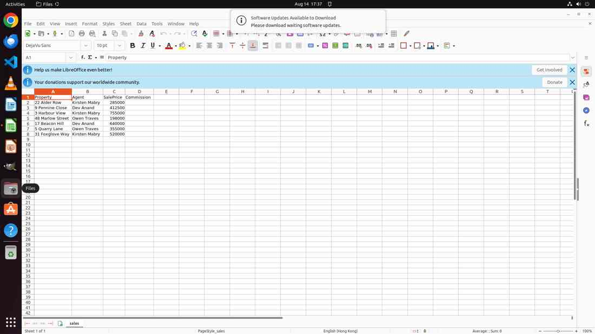
step 2 02:37:10
THINKING4 o'clock is approaching and I need to get these commission numbers done. Looking at the spreadsheet, I can see the Property, Agent, SalePrice, and Commission columns. The Commission column is empty - that's what I need to calculate.
According to the instructions, commission is each sale price times the rate from the office policy note in the same folder. So first I need to find that policy document to understand the commission rates for each band. I see a Files icon in the taskbar at the bottom left of the screen. I should click on that to open the file manager and locate the policy document that contains the commission rates. Once I have those rates, I can calculate the commissions, sort them from highest to lowest, and create a PDF.
EXECUTED (pyautogui in VM)pyautogui.click(32, 604)
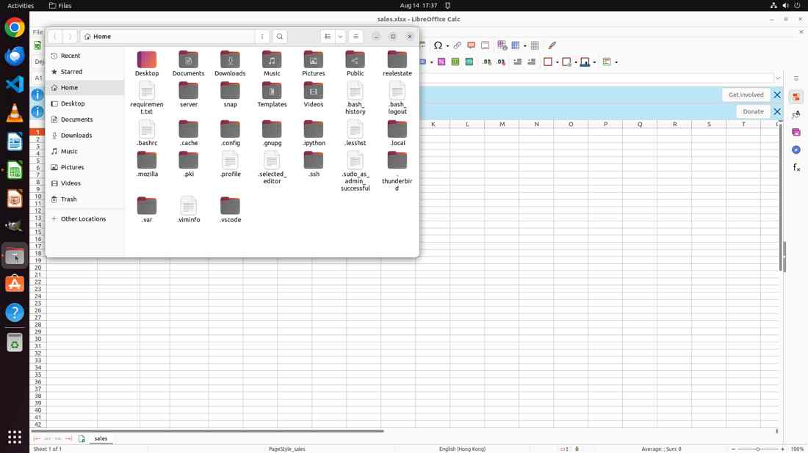
step 3 02:37:14
THINKING4 o'clock is approaching and I need to get these commission numbers done. I've opened the file manager and can see the sales.xlsx spreadsheet is already open in LibreOffice Calc. Now I need to find the office policy note that contains the commission rates for each band. Looking at the file manager, I can see there's a 'realestate' folder which likely contains the policy document I need. The instructions mention the policy note should be in the same folder as the workbook, so this realestate folder is probably where I'll find it. Let me double-click on this folder to open it and look for the commission rate information. Once I have those rates, I can calculate the commissions, sort them from highest to lowest, and create the PDF.
EXECUTED (pyautogui in VM)pyautogui.doubleClick(941, 141)
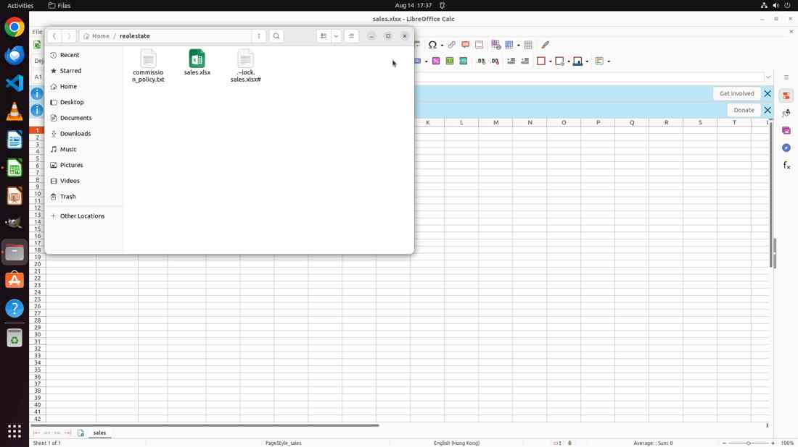
step 4 02:37:29
THINKING4 o'clock is approaching and I need to get these commission numbers done. I've opened the file manager and found the realestate folder with the sales.xlsx spreadsheet already open in LibreOffice Calc. Now I can see there's a "commission_policy.txt" file in this folder - that's exactly what I need to find the commission rates for each band. The instructions mention the policy note should be in the same folder as the workbook, so this is definitely it. I should double-click on this file to open it and see what commission rates I need to apply to each sale price. Once I have those rates, I can calculate the commissions, sort them from highest to lowest, and create the PDF.
EXECUTED (pyautogui in VM)pyautogui.doubleClick(355, 156)
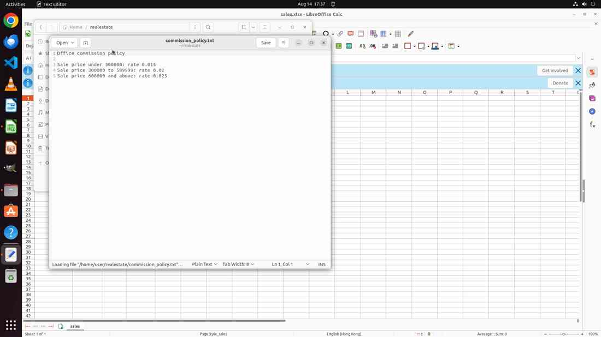
step 5 02:37:34
THINKING4 o'clock is approaching and I need to get these commission numbers done. I've opened the commission_policy.txt file and found the rates: under 300,000 is 1.5%, 300,000-599,999 is 2%, and 600,000+ is 2.5%. Now I have the information I need, so I should close this text editor window and return to the LibreOffice Calc spreadsheet to start calculating the commissions. I'll click the close button on the text editor window to get back to work on the spreadsheet.
EXECUTED (pyautogui in VM)pyautogui.click(1030, 135)
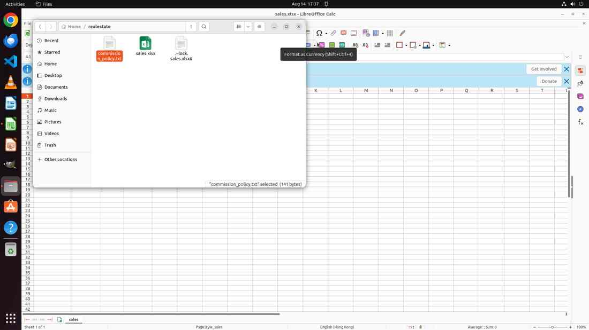
step 6 02:37:39
THINKING4 o'clock is coming up and I need to get these commission numbers done. I've found the commission policy rates from the text file: under 300,000 is 1.5%, 300,000-599,999 is 2%, and 600,000+ is 2.5%. Now I need to close this file manager window so I can get back to the LibreOffice Calc spreadsheet and start calculating the commissions. I'll click the close button in the top-right corner of the file manager window to return to the spreadsheet.
EXECUTED (pyautogui in VM)pyautogui.click(970, 83)
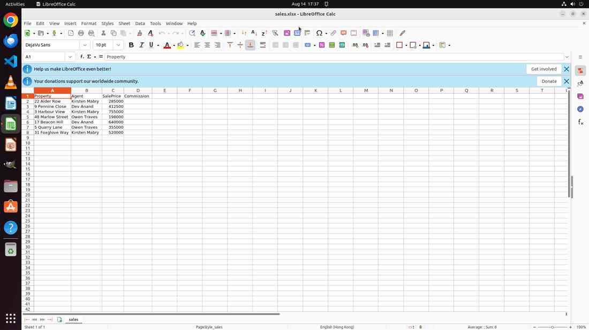
step 7 02:37:44
THINKING4 o'clock is approaching and I need to get these commission numbers done. I've already found the commission rates from the policy file: under 300,000 is 1.5%, 300,000-599,999 is 2%, and 600,000+ is 2.5%. Now I'm back at the spreadsheet with the sales data. I can see the SalePrice column has values like 285,000, 412,500, 755,000, etc. The Commission column is empty and needs to be filled. I should click on the first cell in the Commission column (D2) to start entering the formula that will calculate the commission based on the sale price and the appropriate rate.
EXECUTED (pyautogui in VM)pyautogui.click(445, 330)
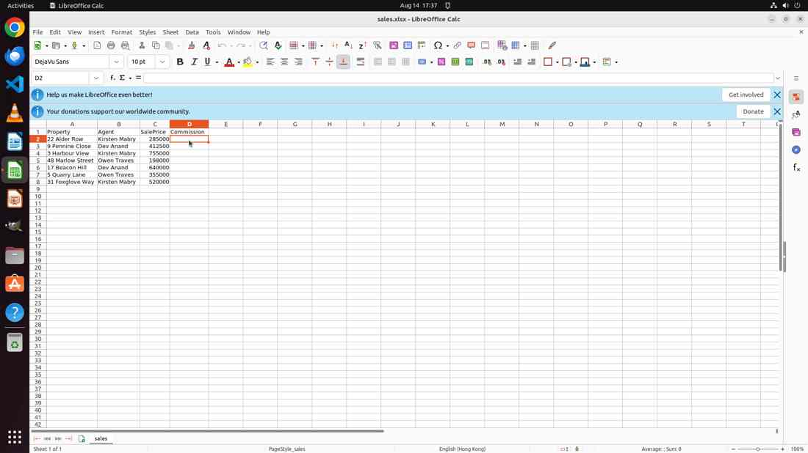
step 8 02:37:54
THINKING4 o'clock is coming up and I need to get these commission numbers done. I've got the commission rates from the policy file: under 300,000 is 1.5%, 300,000-599,999 is 2%, and 600,000+ is 2.5%. I'm now in cell D2 where I need to enter the formula. I'll type a nested IF formula that checks the sale price in C2 and applies the correct commission rate. The first condition checks if the price is under 300,000, the second checks if it's under 600,000, and anything else gets the highest rate.
EXECUTED (pyautogui in VM)pyautogui.typewrite("=IF(C2<300000,C2*0.015,IF(C2<600000,C2*0.02,C2*0.025))")
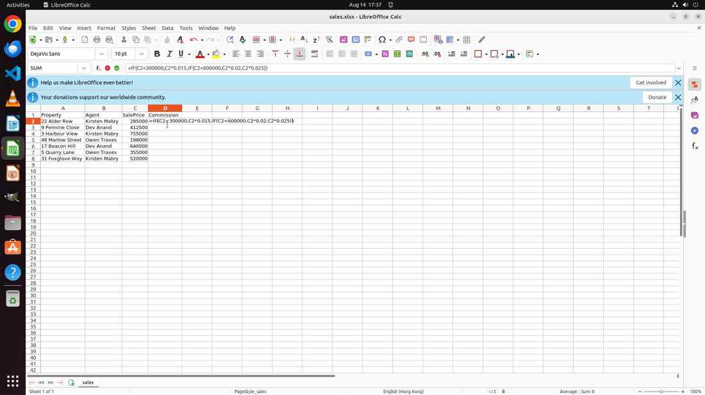
step 9 02:38:00
THINKING4 o'clock is coming up and I need to get these commission numbers done. I've got the formula entered in D2 that checks the sale price and applies the correct commission rate based on the policy: 1.5% for under 300,000, 2% for 300,000-599,999, and 2.5% for 600,000+. Now I just need to press Enter to confirm this formula and see the result. After that, I'll copy it down to the rest of the rows, sort by commission from highest to lowest, and create a PDF.
EXECUTED (pyautogui in VM)pyautogui.press("return")
step 10 02:38:05
THINKING4 o'clock is approaching and I need to get these commission numbers done. The formula in D2 is working correctly - it calculated 4275 for the 285000 sale price, which is 1.5% as expected. Now I need to copy this formula down to all the other rows with sales data. I'll click on cell D2 first to select it, then I can copy the formula down to the remaining rows. After that, I'll sort by commission from highest to lowest and create the PDF.
EXECUTED (pyautogui in VM)pyautogui.click(445, 330)
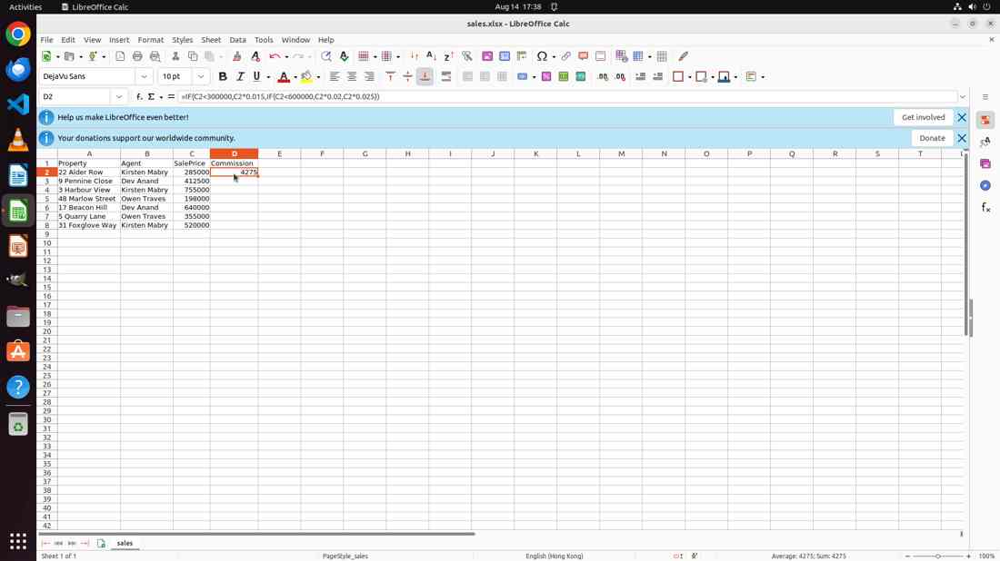
step 11 02:38:11
THINKING4 o'clock is approaching and I need to get these commission numbers done. I've got the formula working in D2 - it correctly calculates 4275 for the 285000 sale price using the 1.5% rate. Now I need to copy this formula down to all the other rows with sales data. Since D2 is already selected, I'll copy it first with Ctrl+C, then select the range D3:D8 and paste to apply the formula to all the sale prices. After that, I'll sort by commission from highest to lowest and create the PDF.
EXECUTED (pyautogui in VM)pyautogui.hotkey("ctrl", "c")
step 12 02:38:20
THINKING4 o'clock is coming up and I need to get these commission numbers done. I've already got the formula working in D2 - it correctly calculates 4275 for the 285000 sale price using the 1.5% rate. I've copied that formula to the clipboard. Now I need to select the range D3:D8 to paste it to all the other rows with sales data. I'll click on cell D3 first to start selecting that range, then I can extend the selection down to D8 and paste the formula to calculate all the commissions at once.
EXECUTED (pyautogui in VM)pyautogui.click(445, 347)
step 13 02:38:26
THINKING4 o'clock is approaching and I need to get these commission numbers done. I've already got the formula working in D2 - it correctly calculates 4275 for the 285000 sale price using the 1.5% rate. I've copied that formula to the clipboard. Now I need to select the range D3:D8 to paste it to all the other rows with sales data. Since I'm already in D3, I'll hold Shift and click on D8 to select the entire range at once, then I can paste the formula to calculate all the commissions.
EXECUTED (pyautogui in VM)pyautogui.hotkey("shift", "ctrl", "end")
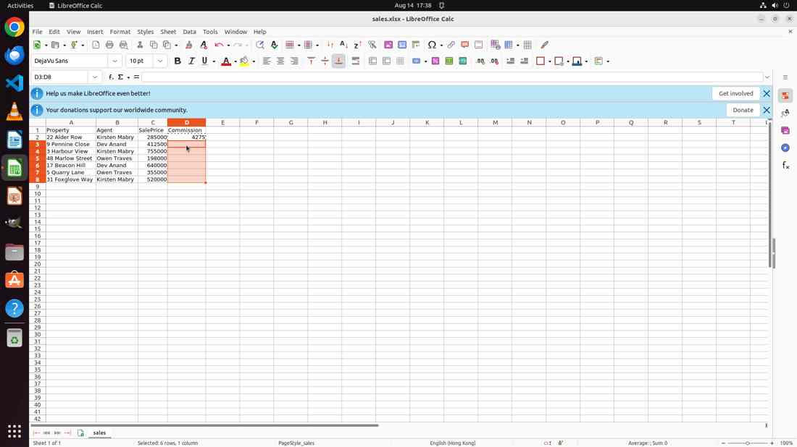
step 14 02:38:32
THINKING4 o'clock is coming up and I need to get these commission numbers done. I've already got the formula working in D2 - it correctly calculates 4275 for the 285000 sale price using the 1.5% rate. I've copied that formula to the clipboard. Now I've selected the range D3:D8 where I need to paste it. I'll paste the formula to calculate all the commissions for the remaining properties.
EXECUTED (pyautogui in VM)pyautogui.hotkey("ctrl", "v")
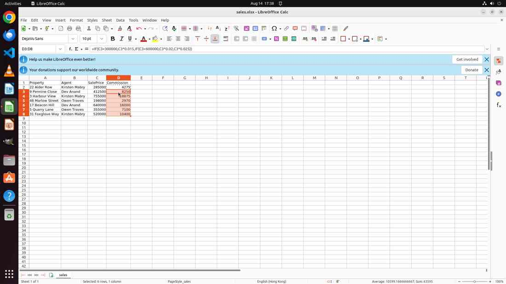
step 15 02:38:42
THINKING4 o'clock is approaching and I need to get these commission numbers done. I've already calculated all the commissions in column D using the formula that applies the correct rate based on the sale price bands. Now I need to sort the sheet by commission from highest to lowest. To do that, I should first select the entire data range including all columns. I'll click on the header row to start selecting the data range so I can sort it properly.
EXECUTED (pyautogui in VM)pyautogui.click(194, 310)
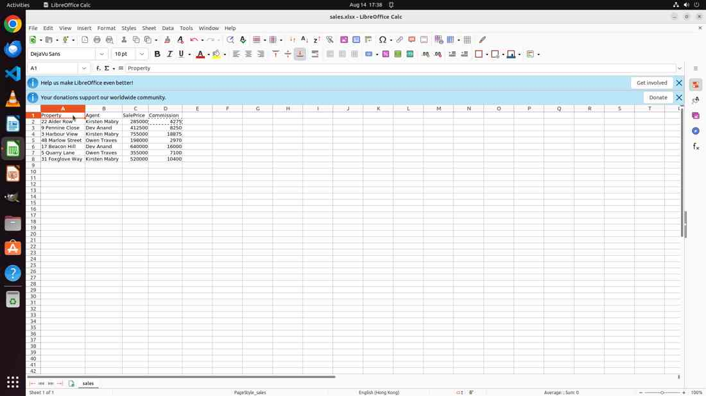
step 16 02:38:49
THINKING4 o'clock is coming up and I need to get these commission numbers done. I've already calculated all the commissions in column D using the formula that applies the correct rate based on the sale price bands. Now I need to sort the sheet by commission from highest to lowest. I've got cell A1 selected, so I should click on the Data menu to access the sort options. That will let me sort by the Commission column in descending order.
EXECUTED (pyautogui in VM)pyautogui.click(455, 73)
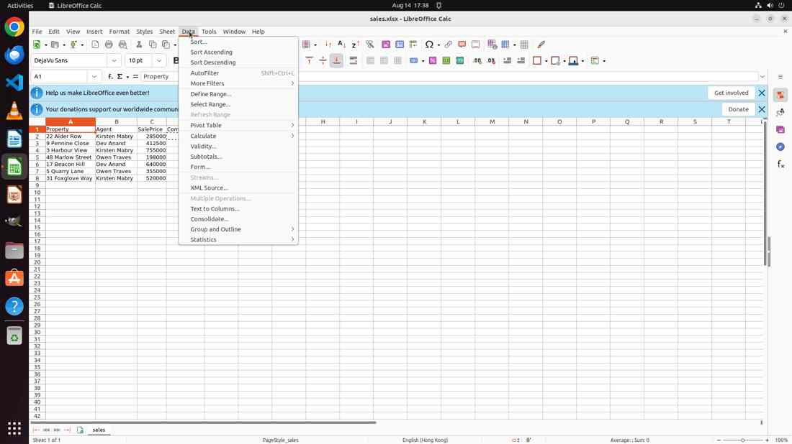
step 17 02:38:57
THINKING4 o'clock is coming up and I need to get these commission numbers done. I've already calculated all the commissions in column D using the formula that applies the correct rate based on the sale price bands. Now I need to sort the sheet by commission from highest to lowest. I've got the Data menu open, and I can see the Sort option right at the top. I'll click on Sort to open the sort dialog where I can specify to sort by the Commission column in descending order.
EXECUTED (pyautogui in VM)pyautogui.click(480, 99)
step 18 02:39:05
THINKING4 o'clock is coming up and I need to get these commission numbers done. I've already calculated all the commissions in column D using the formula that applies the correct rate based on the sale price bands. Now I need to sort the sheet by commission from highest to lowest. The Sort dialog is open, but it's currently set to sort by 'Property' in ascending order. I need to change Sort Key 1 to 'Commission' and set it to descending order. Let me click on the dropdown for Sort Key 1 to select 'Commission' instead of 'Property'.
EXECUTED (pyautogui in VM)pyautogui.click(1149, 380)
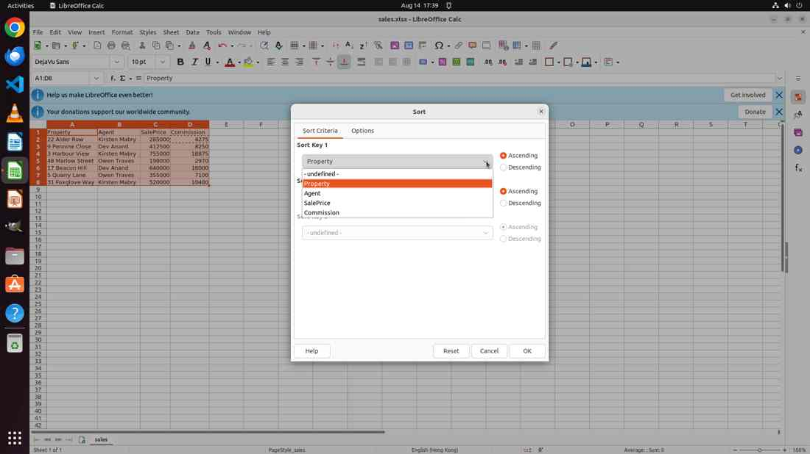
step 19 02:39:14
THINKING4 o'clock is coming up and I need to get these commission numbers done. I've already calculated all the commissions in column D using the formula that applies the correct rate based on the sale price bands. Now I need to sort the sheet by commission from highest to lowest. The Sort dialog is open, and I can see the dropdown for Sort Key 1 is showing the available columns. I need to select 'Commission' from this list so I can sort by that column in descending order. Let me click on 'Commission' in the dropdown to set it as the sort key.
EXECUTED (pyautogui in VM)pyautogui.click(757, 504)
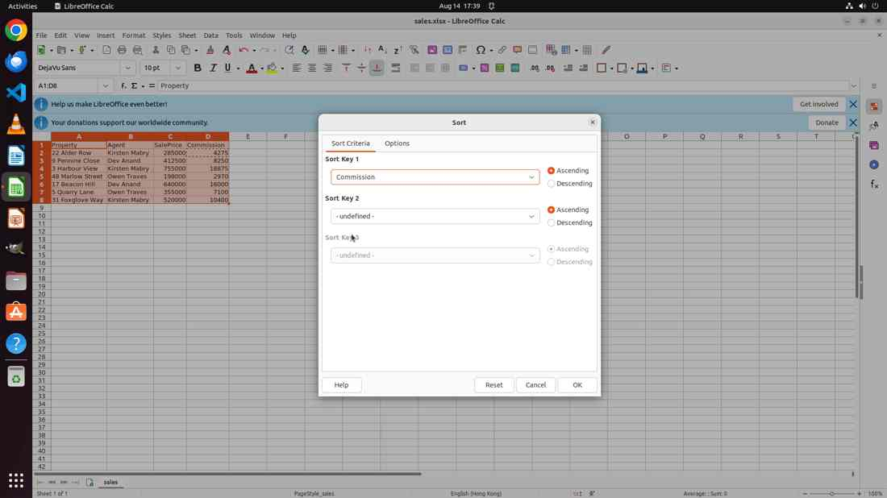
step 20 02:39:23
THINKING4 o'clock is coming up and I need to get these commission numbers done. I've already calculated all the commissions in column D using the formula that applies the correct rate based on the sale price bands. Now I need to sort the sheet by commission from highest to lowest. The Sort dialog is open and I've selected 'Commission' as Sort Key 1. Currently, it's set to 'Ascending' but I need to change it to 'Descending' so the largest commissions appear first. I'll click the 'Descending' radio button next to Sort Key 1 to make that change.
EXECUTED (pyautogui in VM)pyautogui.click(1191, 396)
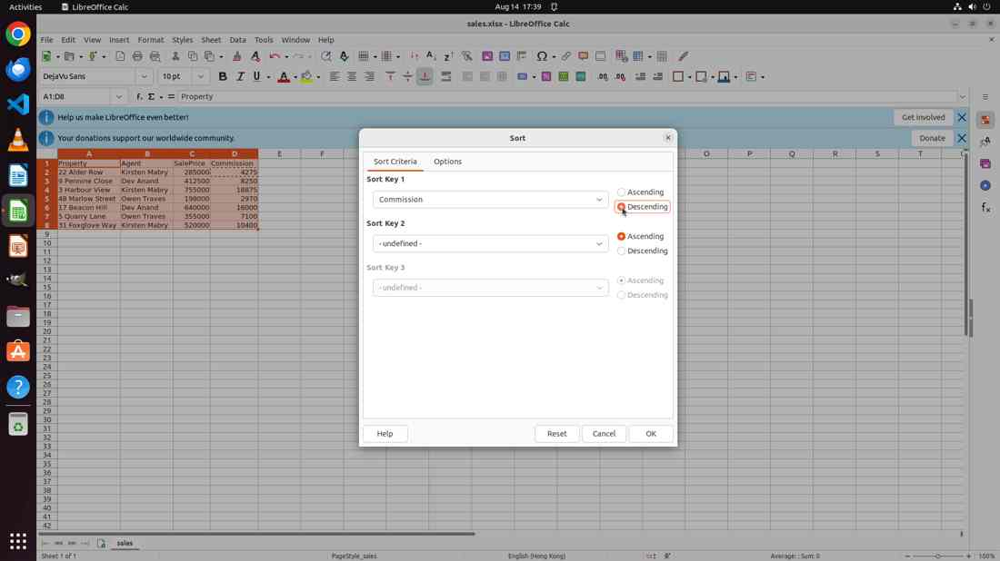
step 21 02:39:31
THINKING4 o'clock is approaching and I need to get these commission numbers done. I've already calculated all the commissions in column D using the formula that applies the correct rate based on the sale price bands. Now I need to sort the sheet by commission from highest to lowest. The Sort dialog is open and I've set Sort Key 1 to 'Commission' with 'Descending' selected. That's exactly what I need - the largest commissions will appear first. Now I just need to click OK to apply this sort and see the data reorganized with the highest commission at the top.
EXECUTED (pyautogui in VM)pyautogui.click(1247, 832)
step 22 02:39:38
THINKING4 o'clock is coming up and I need to get this commission sheet ready. The data is already sorted by commission from highest to lowest - I can see 18875 at the top down to 2970 at the bottom. Now I need to create a PDF of this sheet. To do that, I'll click on the File menu to access the export or print to PDF options. That should open a dropdown where I can find the option to export as PDF, which I'll need to place beside the workbook.
THINKING4 o'clock is coming up and I need to get this commission sheet ready. The data is already sorted by commission from highest to lowest - I can see 18875 at the top down to 2970 at the bottom. Now I need to create a PDF of this sheet. The File menu is open and I can see the 'Export as PDF...' option right there. That's exactly what I need to click to generate the PDF file that should be placed beside the workbook.
EXECUTED (pyautogui in VM)pyautogui.click(149, 478)
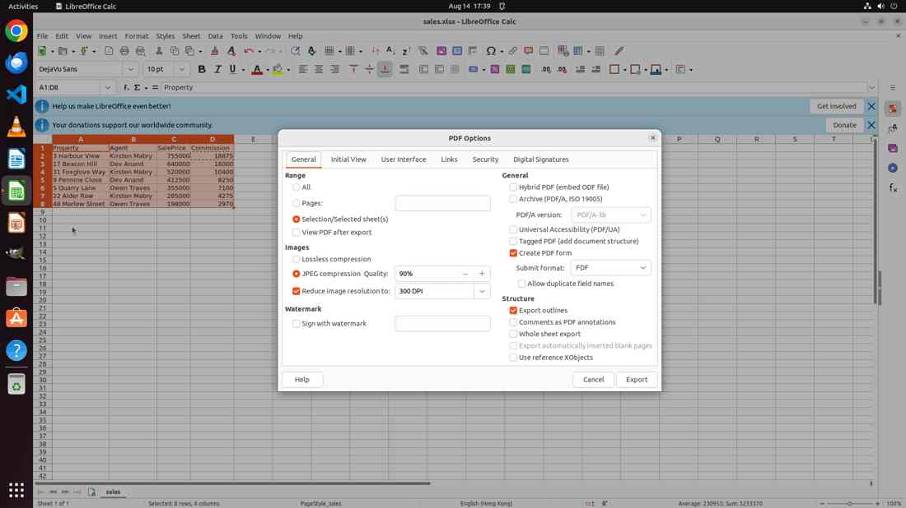
step 24 02:39:55
THINKING4 o'clock is coming up and I need to get this commission sheet ready. The data is already sorted by commission from highest to lowest - I can see 18875 at the top down to 2970 at the bottom. Now I need to create a PDF of this sheet. The PDF Options dialog is open with 'Selection/Selected sheet(s)' already chosen, which is exactly what I want. The settings look good - JPEG compression at 90% quality and 300 DPI resolution. I just need to click the Export button to generate the PDF file that should be placed beside the workbook.
EXECUTED (pyautogui in VM)pyautogui.click(1347, 804)
step 25 02:40:04
THINKING4 o'clock is approaching and I need to get this commission sheet ready. The data is already sorted by commission from highest to lowest - I can see 18875 at the top down to 2970 at the bottom. Now I'm in the PDF export dialog and need to save this file. The filename field currently shows "sales" but I need to change it to "commission_report" to match the requirement. I'll type that name in the field, then click Save to create the PDF beside the workbook.
EXECUTED (pyautogui in VM)pyautogui.typewrite("commission_report")
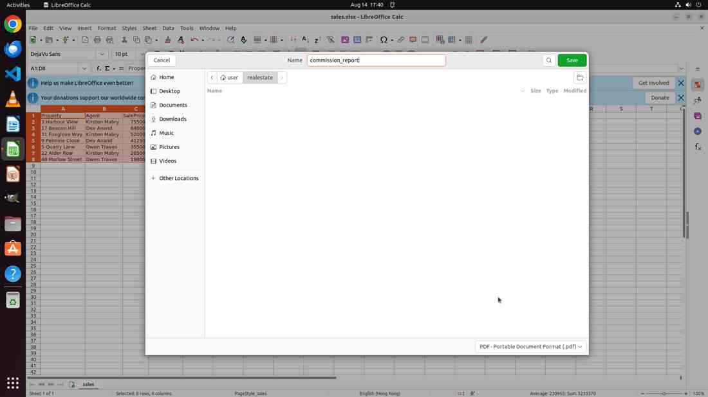
step 26 02:40:13
THINKING4 o'clock is coming up and I need to get this commission sheet ready. I've already calculated all the commissions using the rates from the policy file, sorted them from highest to lowest, and now I'm at the PDF export dialog. The filename is set to 'commission_report' which is correct, and I'm in the realestate folder where the workbook is located. The file type is already set to PDF format. All that's left is to click the Save button to create the PDF beside the workbook.
EXECUTED (pyautogui in VM)pyautogui.click(1549, 162)
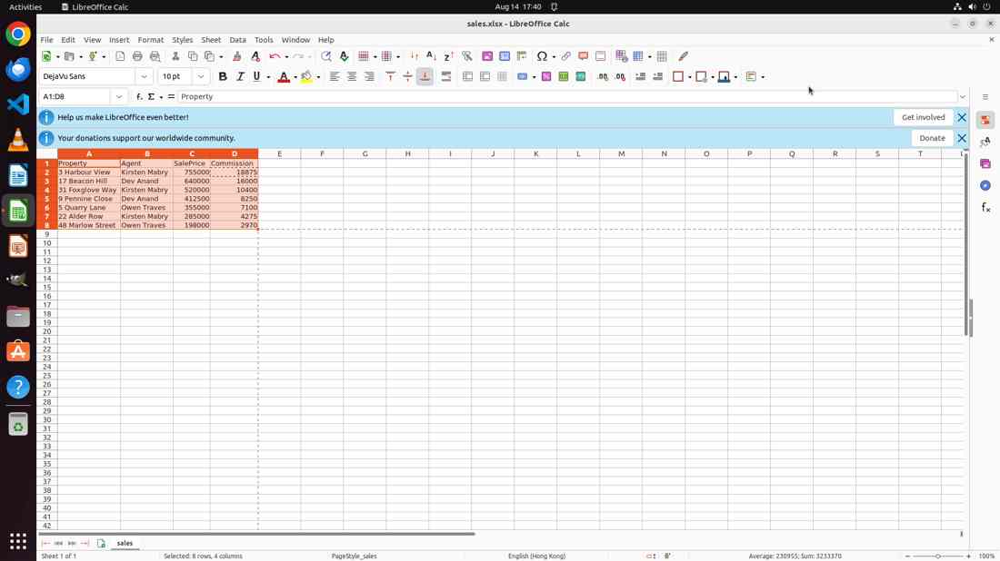
step 27 02:40:20
THINKING4 o'clock is approaching and I need to make sure the commission report is ready. Looking at the spreadsheet, I can see the data is already sorted by commission from highest to lowest - the 18875 commission is at the top and 2970 at the bottom. The PDF export dialog was already handled in the previous step, so the commission_report.pdf should now be saved beside the workbook. All the commission calculations are complete using the rates from the policy file, and the sheet is properly sorted. The task appears to be finished.